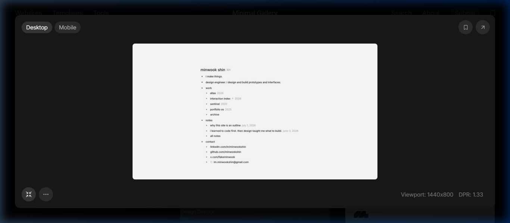
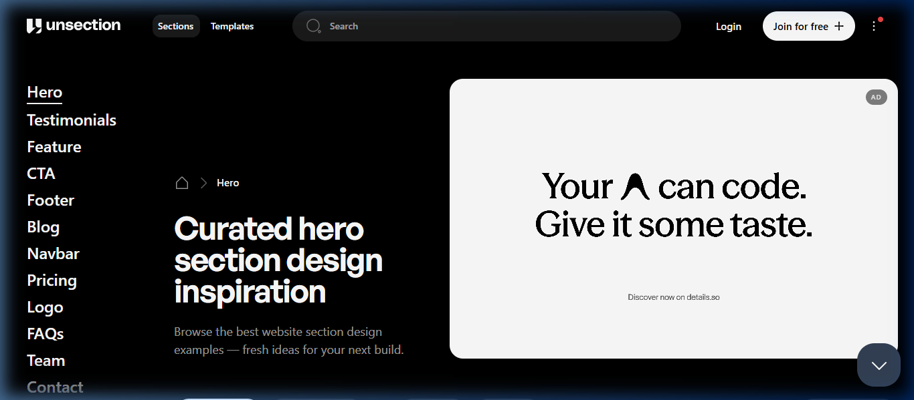
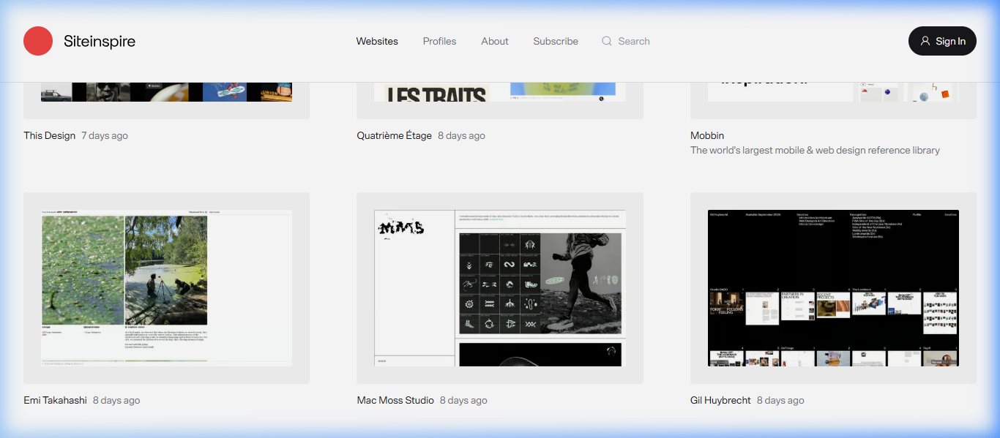

Engineering Deterministic Test Systems at Scale.
Building high-speed, hermetic test automation frameworks in Playwright & TypeScript, volumetric performance gates in JMeter, and resilient CI/CD quality pipelines for 10M+ user enterprise platforms.
Live Playwright Test Runner
Automated CI/CD Quality Gate
Architected Solutions & Impact
Enterprise E-Commerce Test Automation Engine
Engineered end-to-end Playwright automation framework for Shwapno & Paragon retail platforms, automating 2,940+ regression test scenarios and cutting manual release cycles by 45%.
Distributed Volumetric Performance Harness
Designed Apache JMeter and k6 distributed stress testing topologies to simulate extreme festival peak loads, pinpointing database connection pool locks before production rollout.
Minimal Gallery Live Reference Showcase
These are the actual live portfolio benchmarks researched via browser preview on Minimal Gallery, inspiring the spatial cadence, negative space, and typographic restraint of this prototype:



Let's Build Resilient Quality Systems.
Available for SQA Automation Engineer & SDET roles, technical consultations, and CI/CD quality architecture.